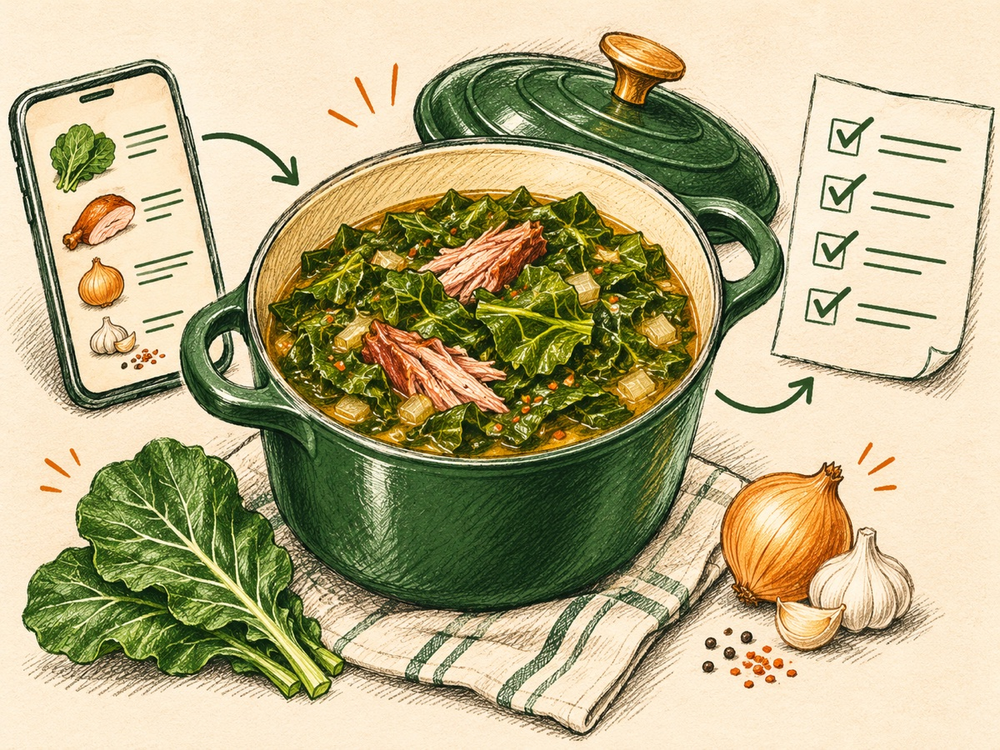

Collards that actually click.
I gave Claude a screenshot of my collard greens recipe and turned it into a checklist I could use at the stove. Here's my version of the recipe, plus what made this little AI build worth keeping.

What Claude actually did
The recipe started as a note on my phone. Claude turned the screenshot into ingredients I could check off, steps I could scan from the stove, and two timers for the simmer. It didn't need to invent a better recipe. It needed to make the recipe I already had easier to use.
If you try this with your own notes, ask for the quantities and substitutions to stay intact, tell the model to flag anything it can't read, and check the result against your original before you use it. The smallest useful version here was a checklist, not a cooking chatbot.
Sources
- Recipe inspiration: Whisk It Real Gud's Southern Collard Greens
- Food safety: USDA minimum internal temperatures
Cooking from your phone?
The original checklist has a one-hour timer for the pot liquor and a two-hour timer for the greens.
Open the checklist with timers